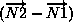
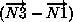
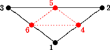
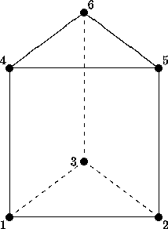

The intellectual content of the CGNS database is defined in terms of C-like notation including typedefs and structures. The database is made up of entities, and each entity has a type associated with it. Entities include such things as the dimensionality of the grid, an array of grid coordinates, or a zone which contains all the data associated with a given region. Entities are defined in terms of types, where a type can be an integer or a collection of elements (a structure) or a hierarchy of structures or other similar constructs.
The terminology "instance of an entity" is used to refer to an entity that has been assigned a value or whose elements have been assigned values. The terminology "specific instance of a structure" is also used in the following sections. It is short for an instance of an entity whose type is a structure.
Names of entities and types are constructed using conventions typical
of Mathematica
 [Mathematica 3.0, Wolfram Research,
Inc. , Champaign, IL (1996)].
Names or identifiers contain no spaces and capitalization is used to
distinguish individual words making up a name; names are case-sensitive.
The characters "." and "/" should be avoided in names
as these have special meaning when referencing elements of a structure
entity.
[Mathematica 3.0, Wolfram Research,
Inc. , Champaign, IL (1996)].
Names or identifiers contain no spaces and capitalization is used to
distinguish individual words making up a name; names are case-sensitive.
The characters "." and "/" should be avoided in names
as these have special meaning when referencing elements of a structure
entity.
The following notational conventions are employed:
| ! | comment to end of line | ||
| _t | suffix used for naming a type | ||
| ; | end of a definition, declaration, assignment or entity instance | ||
| = | assignment (takes on the value of) | ||
| := | indicates a type definition (typedef) | ||
| [ ] | delimiters of an array | ||
| { } | delimiters of a structure definition | ||
| {{ }} | delimiters of an instance of a structure entity | ||
| < > | delimiters of a structure parameter list | ||
| int | integer | ||
| real | floating-point number | ||
| char | character | ||
| bit | bit | ||
| Enumeration( ) | indicates an enumeration type | ||
| Data( ) | indicates an array of data, which may be multidimensional | ||
| List( ) | indicates a list of entities | ||
| Identifier( ) | indicates an entity identifier | ||
| LogicalLink( ) | indicates a logical link | ||
| / | delimiter for element of a structure entity | ||
| ../ | delimiter for parent of a structure entity | ||
| (r) | designation for a required structure element | ||
| (o) | designation for an optional structure element | ||
| (o/d) | designation for an optional structure element with default if absent |
An enumeration type is a set of values identified by names; names of values within a given enumeration declaration must be unique. An example of an enumeration type is the following:
Enumeration( Dog, Cat, Bird, Frog )This defines an enumeration type which contains four values.
Data() identifies an array of given dimensionality and size in each dimension, whose elements are all of a given data type. It is written as,
Data( DataType, Dimension, DimensionValues[] ) ;Dimension is an integer, and DimensionValues[] is an array of integers of size Dimension. Dimension and DimensionValues[] specify the dimensionality of the array and its size in each dimension. DataType specifies the data type of the array's elements; it may consist of one of the following: int, real, char or bit. For multidimensional arrays, FORTRAN indexing conventions are used. Data() is formulated to map directly onto the data section of an ADF node.
A typedef establishes a new type and defines it in terms of previously defined types. Types are identified by the suffix "_t", and the symbol ":=" is used to establish a type definition (or typedef). For example, the above enumeration example can be used in a typedef:
Pet_t := Enumeration( Dog, Cat, Bird, Frog ) ;This defines a new type Pet_t, which can then be used to declare a new entity, such as,
Pet_t MyFavoritePet ;By the above typedef and declaration, MyFavoritePet is an entity of type Pet_t and can have the values Dog, Cat, Bird or Frog. A specific instance of MyFavoritePet is setting it equal to one of these values (e.g., MyFavoritePet = Bird).
A structure is a type that can contain any number of elements, including elements that are also structures. An example of a structure type definition is:
Sample_t :=
{
int Dimension ; (r)
real[4] Vector ; (o)
Pet_t ObnoxiousPet ; (o)
} ;
where Sample_t is the type of the structure.
This structure contains three elements, Dimension,
Vector and ObnoxiousPet, whose types are int,
real[4] and Pet_t, respectively.
The type int specifies an integer, and real[4]
specifies an array of reals that is one-dimensional with a length of
four.
The "(r)" and "(o)" notation in the right margin is
explained below.
Given the definition of Sample_t, entities of this type can
then be declared (e.g., Sample_t Sample1;).
An example of an instance of a structure entity is given by,
Sample_t Sample1 =
{{
Dimension = 3 ;
Vector = [1.0, 3.45, 2.1, 5.4] ;
ObnoxiousPet = Dog ;
}} ;
Note the different functions played by single braces "{" and
double braces "{{".
The first is used to delimit the definition of a structure type; the
second is used to delimit a specific instance of a structure entity.
Some structure type definitions contain arbitrarily long lists of other structures or types. These lists will be identified by the notation,
List( Sample_t Sample1 ... SampleN ) ;where Sample1 ... SampleN is the list of structure names or identifiers, each of which has the type Sample_t. Within each list, the individual structure names are user-defined.
In the CGNS database it is sometimes necessary to reference the name or identifier of a structure entity. References to entities are denoted by Identifier(), whose single argument is a structure type. For example,
Identifier(Sample_t) SampleName ;declares an entity, SampleName, whose value is the identifier of a structure entity of type Sample_t. Given this declaration, SampleName could be assigned the value Sample1 (i.e., SampleName = Sample1).
It is sometimes convenient to directly identify an element of a specific structure entity. It is also convenient to indicate that two entities with different names are actually the same entity. We borrow UNIX conventions to indicate both these features, and make the analogy that a structure entity is a UNIX directory and its elements are UNIX files. An element of an entity is designated by "/"; an example is Sample1/Vector). The structure entity that a given element belongs to is designated "../". A UNIX-like logical link that specifies the sameness of two apparently different entities is identified by LogicalLink(); it has one argument. An example of a logical link is as follows: Suppose a specific instance of a structure entity contains two elements that are of type Sample_t; call them SampleA and SampleB. The statement that SampleB is actually the same entity as SampleA is,
SampleB = LogicalLink(../SampleA) ;The argument of LogicalLink() is the UNIX-like "path name" of the entity with which the link is made. In this document, LogicalLink() and the direct specification of a structure element via "/" and "../" are actually seldom used. These language elements are never used in the actual definition of a structure type.
Structure type definitions include three additional syntactic/semantic notions. These are parameterized structures, structure-related functions, and the identification of required and optional fields within a structure.
As previously stated, one of our design objectives is to minimize duplication of information within the CGNS database. To meet this objective, information is often stored in only one location of the hierarchy; however, that information is typically used in other parts of the hierarchy. A consequence of this is that it may not be possible to decipher all the information associated with a given entity in the hierarchy without knowledge of data contained in higher level entities. For example, the grid size of a zone is stored in one location (in Zone_t), but is needed in many substructures to define the size of grid and solution-data arrays.
This organization of information must be reflected in the language used to describe the database. First, parameterized structures are introduced to formalize the notion that information must be passed down the hierarchy. A given structure type is defined in terms of a list of parameters that precisely specify what information must be obtained from the structure's parent. These structure-defining parameters play a similar role to subroutine parameters in C or FORTRAN and are used to define fields within the structure; they are also passed onto substructures. Parameterized structures are also loosely tied to templates in C++.
Parameterized structures are identified by the delimiters < > enclosing the list of parameters. Each structure parameter in a structure-type definition consists of a type and an identifier. Examples of parameterized structure type definitions are:
NewSample_t< int Dimension, int Fred > :=
{
int[Dimension] Vector ; (o)
Pet_t ObnoxiousPet ; (o)
Stuff_t<Fred> Thingy ; (o)
} ;
Stuff_t< int George > :=
{
real[George] IrrelevantStuff ; (r)
} ;
NewSample_t and Stuff_t are parameterized structure
types.
Dimension and Fred are the structure parameters of
NewSample_t.
George is the structure parameter of Stuff_t.
All structure parameters in this example are of type int.
Thingy is a structure entity of type Stuff_t; it uses
the parameter Fred to complete its declaration.
Note the use of George and Fred in the above example.
George is a parameter in the definition of Stuff_t;
Fred is an argument in the declaration of an entity of type
Stuff_t.
This mimics the use of parameters in function definitions in C.
A second language feature required to cope with the cascade of information within the hierarchy is structure-related functions. For example, the size of an array within a given structure may be a function of one or more of the structure-defining parameters, or the array size may be a function of an optional field within the structure. No new syntax is provided to incorporate structure-related functions; they are instead described in terms of their return values, dependencies, and functionality.
An additional notation used in structure typedefs is that each element or field within a structure definition is identified as required, optional, or optional with a default if absent; these are designated by "(r)", "(o)", and "(o/d)", respectively, in the right margin of the structure definition. These designations are included to assist in implementation of the data structures into an actual database and can be used to guide mapping of data as well as error checking. "Required" fields are those essential to the interpretation of the information contained within the data structure. "Optional" fields are those that are not necessary but potentially useful, such as documentation. "Defaulted-optional" fields are those that take on a known default if absent from the database.
In the example of Sample_t above, only the element Dimension is required. Both elements Vector and ObnoxiousPet are optional. This means that in any specific instance of the structure, only Dimension must be present. An alternative instance of the entity Sample1 shown above is the following:
Sample_t Sample1 =
{{
Dimension = 4 ;
}} ;
None of the entities and types defined in the above examples are actually used in the definition of the SIDS. As a final note, the reader should be aware that the SIDS is a conceptual description of the form of the data. The actual location of data in the file is determined by the file mapping, defined by the appropriate File Mapping Manual.
A grid is defined by its vertices. In a 3-D structured grid, the volume is the ensemble of cells, where each cell is the hexahedron region defined by eight nearest neighbor vertices. Each cell is bounded by six faces, where each face is the quadrilateral made up of four vertices. An edge links two nearest-neighbor vertices; a face is bounded by four edges.
In a 2-D structured grid, the notation is more ambiguous. Typically, the quadrilateral area composed of four nearest-neighbor vertices is referred to as a cell. The sides of each cell, the line linking two vertices, is either a face or an edge. In a 1-D grid, the line connecting two vertices is a cell.
A structured multizone grid is composed of multiple regions called zones, where each zone includes all the vertices, cells, faces, and edges that constitute the grid in that region.
Indices describing a 3-D grid are ordered (i,j,k); (i,j) is used for 2-D and (i) for 1-D.
Cell centers, face centers, and edge centers are indexed by the minimum
i, j, and k indices of the connecting vertices.
For example, a 2-D cell center (or face center on a 3-D grid) would have
the following convention:

A zone may contain grid-coordinate or flow-solution data defined
at a set of points outside the zone itself.
These are referred to as "rind" or ghost points and may be associated
with fictitious vertices or cell centers.
They are distinguished from the vertices and cells making up the grid
within the zone (including its boundary vertices), which are referred to
as "core" points.
The following is a 2-D zone with a single row of rind vertices
at the minimum and maximum i-faces.
The grid size (i.e., the number of core vertices in each direction) is
5×4.
Core vertices are designated by a bullet, and rind vertices by
"×".
Default indexing is also shown for the vertices.

For a zone, the minimum faces in each coordinate direction are denoted i-min, j-min and k-min; the maximum faces are denoted i-max, j-max and k-max. These are the minimum and maximum core faces. For example, i-min is the face or grid plane whose core vertices have minimum i index (which if using default indexing is 1).
The major difference in the way structured and unstructured grids are recorded is the element definition. In a structured grid, the elements can always be recomputed easily using the computational coordinates, and therefore they are usually not written in the data file. For an unstructured grid, the element connectivity cannot be easily built, so this additional information is generally added to the data file. The element information typically includes the element type or shape, and the list of nodes for each element.
In an unstructured zone, the nodes are ordered from 1 to N, where N is the number of nodes in the zone. An element is defined as a group of one or more nodes, where each node is represented by its index. The elements are indexed from 1 to M within a zone, where M is the total number of elements defined for the zone.
CGNS supports eight element shapes - points, lines, triangles, quadrangles, tetrahedra, pentahedra, pyramids, and hexahedra. Elements describing a volume are referred to as 3-D elements. Those defining a surface are 2-D elements. Line and point elements are called 1-D and 0-D elements, respectively.
In a 3-D unstructured mesh, the cells are defined using 3-D elements, while the boundary patches may be described using 2-D elements. The complete element definition may include more than just the cells.
Each element shape may have a different number of nodes, depending on
whether linear or quadratic interpolation is used.
Therefore the name of each type of element is composed of two parts;
the first part identifies the element shape, and the second part the
number of nodes.
The following table summarizes the element types supported in CGNS.
| Dimensionality | Shape | Linear Interpolation | Quadratic Interpolation | |||
|---|---|---|---|---|---|---|
| 0-D | Point | NODE | NODE | |||
| 1-D | Line | BAR_2 | BAR_3 | |||
| 2-D | Triangle | TRI_3 | TRI_6 | |||
| Quadrangle | QUAD_4 | QUAD_8, QUAD_9 | ||||
| 3-D | Tetrahedron | TETRA_4 | TETRA_10 | |||
| Pyramid | PYRA_5 | PYRA_13, PYRA_14 | ||||
| Pentahedron | PENTA_6 | PENTA_15, PENTA_18 | ||||
| Hexahedron | HEXA_8 | HEXA_20, HEXA_27 | ||||
The ordering of the nodes within an element is important. Since the nodes in each element type could be ordered in multiple ways, it is necessary to define numbering conventions. The following sections describe the element numbering conventions used in CGNS.
Like a structured zone, an unstructured zone may contain grid-coordinates or flow-solution data at points outside of the zone itself, through the use of ghost or "rind" points and elements. However, unlike for structured zones, rind data for unstructured zones cannot be defined implicitly (i.e., via indexing conventions alone). In other words, when using rind with unstructured zones, the rind grid points and their element connectivity information should always be given.
1-D elements represent geometrically a line (or bar).
The linear form, BAR_2, is composed of two nodes at each extremity
of the line.
The quadratic form, BAR_3, has an additional node located at
the middle of the line.
BAR_2
| BAR_3
|
| Oriented edge | Corner nodes | Mid node | ||
|---|---|---|---|---|
| E1 | N1,N2 | N3 |
2-D elements represent a surface in either 2-D or 3-D space. Note that in physical space, the surface need not be planar, but may be curved. In a 2-D mesh the elements represent the cells themselves; in a 3-D mesh they represent faces. CGNS supports two shapes of 2-D elements - triangles and quadrangles.
The normal vector of a 2-D element is computed using the cross product
of a vector from the first to second node, with a vector from the first
to third node.
The direction of the normal is such that the three vectors
(i.e., ,
, and
 ) form a right-handed triad.
) form a right-handed triad.

Two types of triangular elements are supported in CGNS, TRI_3
and TRI_6.
TRI_3 elements are composed of three nodes located at the
three geometric corners of the triangle.
TRI_6 elements have three additional nodes located at the
middles of the three edges.
TRI_3
| TRI_6  |
|
|
| N1,...,N6 | Grid point identification number.
Integer ≥ 0 or blank, and no two values may be the same.
Grid points N1, N2, and N3 are in
consecutive order about the triangle.
| ||
| E1,E2,E3 | Edge identification number.
| ||
| F1 | Face identification number. |
CGNS supports three types of quadrilateral elements, QUAD_4,
QUAD_8, and QUAD_9.
QUAD_4 elements are composed of four nodes located at the
four geometric corners of the quadrangle.
In addition, QUAD_8 and QUAD_9 elements have four
mid-edge nodes, and QUAD_9 adds a mid-face node.
QUAD_4
| QUAD_8
| |||||||||||||||||||||||||||
QUAD_9
|
|
| Face | Corner nodes | Mid-edge nodes | Mid-face node | Oriented edges | ||||
|---|---|---|---|---|---|---|---|---|
| F1 | N1,N2,N3,N4 | N5,N6,N7,N8 | N9 | E1,E2,E3,E4 |
| N1,...,N9 | Grid point identification number.
Integer ≥ 0 or blank, and no two values may be the same.
Grid points N1, ..., N4 are in
consecutive order about the quadrangle.
| ||
| E1,...,E4 | Edge identification number.
| ||
| F1 | Face identification number. |
3-D elements represent a volume in 3-D space, and constitute the cells of a 3-D mesh. CGNS supports four different shapes of 3-D elements - tetrahedra, pyramids, pentahedra, and hexahedra.
CGNS supports two types of tetrahedral elements, TETRA_4
and TETRA_10.
TETRA_4 elements are composed of four nodes located at the
four geometric corners of the tetrahedron.
TETRA_10 elements have six additional nodes, at the middle
of each of the six edges.
TETRA_4
| TETRA_10
|
|
|
| N1,...,N10 | Grid point identification number.
Integer ≥ 0 or blank, and no two values may be the same.
Grid points N1 ... N3 are in consecutive order about
one trilateral face.
The cross product of a vector going from N1 to N2,
with a vector going from N1 to N3, must result in a
vector oriented from face F1 toward N4.
| ||
| E1,...,E6 | Edge identification number.
The edges are oriented from the first to the second node.
A negative edge (e.g., -E1) means that the edge is used in
its reverse direction.
| ||
| F1,...,F4 | Face identification number. The faces are oriented so that the cross product of a vector from its first to second node, with a vector from its first to third node, is oriented outward. |
CGNS supports three types of pyramid elements, PYRA_5,
PYRA_13, and PYRA_14.
PYRA_5 elements are composed of five nodes located at the
five geometric corners of the pyramid.
In addition, PYRA_13 and PYRA_14 elements have a node
at the middle of each of the eight edges; PYRA_14 adds a node
at the middle of the quadrilateral face.
PYRA_5
| PYRA_13
| |||||||||||||||||||||||||||||||||||||||||||||||
PYRA_14
|
|
| Face | Corner nodes | Mid-edge nodes | Mid-face node | Oriented edges | ||||
|---|---|---|---|---|---|---|---|---|
| F1 | N1,N4,N3,N2 | N9,N8, N7, N6 | N14 | -E4,-E3,-E2,-E1 | ||||
| F2 | N1,N2,N5 | N6,N11,N10 | E1, E6,-E5 | |||||
| F3 | N2,N3,N5 | N7,N12,N11 | E2, E7,-E6 | |||||
| F4 | N3,N4,N5 | N8,N13,N12 | E3, E8,-E7 | |||||
| F5 | N4,N1,N5 | N9,N10,N13 | E4, E5,-E8 |
| N1,...,N14 | Grid point identification number.
Integer ≥ 0 or blank, and no two values may be the same.
Grid points N1 ... N4 are in consecutive order about
the quadrilateral face.
The cross product of a vector going from N1 to N2,
with a vector going from N1 to N3, must result in a
vector oriented from face F1 toward N5.
N14 is located at the center of the quadrilateral face.
| ||
| E1,...,E8 | Edge identification number.
The edges are oriented from the first to the second node.
A negative edge (e.g., -E1) means that the edge is used in
its reverse direction.
| ||
| F1,...,F5 | Face identification number. The faces are oriented so that the cross product of a vector from its first to second node, with a vector from its first to third node, is oriented outward. |
CGNS supports three types of pentahedral elements, PENTA_6,
PENTA_15, and PENTA_18.
PENTA_6 elements are composed of six nodes located at the
six geometric corners of the pentahedron.
In addition, PENTA_15 and PENTA_18 elements have a node
at the middle of each of the nine edges; PENTA_18 adds a
node at the middle of each of the three quadrilateral faces.
| PENTA_6  | PENTA_15
| ||||||||||||||||||||||||||||||||||||||||||||||||||||
PENTA_18
|
|
| Face | Corner nodes | Mid-edge nodes | Mid-face node | Oriented edges | ||||
|---|---|---|---|---|---|---|---|---|
| F1 | N1,N2,N5,N4 | N7, N11,N13,N10 | N16 | E1, E5,-E7,-E4 | ||||
| F2 | N2,N3,N6,N5 | N8, N12,N14,N11 | N17 | E2, E6,-E8,-E5 | ||||
| F3 | N3,N1,N4,N6 | N9, N10,N15,N12 | N18 | E3, E4,-E9,-E6 | ||||
| F4 | N1,N3,N2 | N9, N8, N7 | -E3,-E2,-E1 | |||||
| F5 | N4,N5,N6 | N13,N14,N15 | E7, E8, E9 |
| N1,...,N18 | Grid point identification number.
Integer ≥ 0 or blank, and no two values may be the same.
Grid points N1 ... N3 are in consecutive order about
one trilateral face.
Grid points N4 ... N6 are in order in the same
direction around the opposite trilateral face.
| ||
| E1,...,E9 | Edge identification number.
The edges are oriented from the first to the second node.
A negative edge (e.g., -E1) means that the edge is used in
its reverse direction.
| ||
| F1,...,F5 | Face identification number. The faces are oriented so that the cross product of a vector from its first to second node, with a vector from its first to third node, is oriented outward. |
CGNS supports three types of hexahedral elements, HEXA_8,
HEXA_20, and HEXA_27.
HEXA_8 elements are composed of eight nodes located at the
eight geometric corners of the hexahedron.
In addition, HEXA_20 and HEXA_27 elements have a node
at the middle of each of the twelve edges; HEXA_27 adds a
node at the middle of each of the six faces, and one at the cell center.
HEXA_8
| HEXA_20
| |||||||||||||||||||||||||||||||||||||||||||||||||||||||||||||||||||
HEXA_27
|
|
| Face | Corner nodes | Mid-edge nodes | Mid-face node | Oriented edges | ||||
|---|---|---|---|---|---|---|---|---|
| F1 | N1,N4,N3,N2 | N12,N11,N10,N9 | N21 | -E4,-E3, -E2, -E1 | ||||
| F2 | N1,N2,N6,N5 | N9, N14,N17,N13 | N22 | E1, E6, -E9, -E5 | ||||
| F3 | N2,N3,N7,N6 | N10,N15,N18,N14 | N23 | E2, E7, -E10,-E6 | ||||
| F4 | N3,N4,N8,N7 | N11,N16,N19,N15 | N24 | E3, E8, -E11,-E7 | ||||
| F5 | N1,N5,N8,N4 | N13,N20,N16,N12 | N25 | E5,-E12,-E8, E4 | ||||
| F6 | N5,N6,N7,N8 | N17,N18,N19,N20 | N26 | E9, E10, E11, E12 |
| N1,...,N27 | Grid point identification number.
Integer ≥ 0 or blank, and no two values may be the same.
Grid points N1 ... N4 are in consecutive order about
one quadrilateral face.
Grid points N5 ... N8 are in order in the same
direction around the opposite quadrilateral face.
| ||
| E1,...,E12 | Edge identification number.
The edges are oriented from the first to the second node.
A negative edge (e.g., -E1) means that the edge is used in
its reverse direction.
| ||
| F1,...,F6 | Face identification number. The faces are oriented so that the cross product of a vector from its first to second node, with a vector from its first to third node, is oriented outward. |
Consider an unstructured zone in the shape of a cube, with each edge of the zone having three nodes. The resulting unstructured grid has a total of 27 nodes, as illustrated in the exploded figure below.

This zone contains eight hexahedral cells, numbered 1 to 8, and the
cell connectivity is:
| Element No. | Element Connectivity | |
|---|---|---|
| 1 | 1, 2, 5, 4, 10, 11, 14, 13 | |
| 2 | 2, 3, 6, 5, 11, 12, 15, 14 | |
| 3 | 4, 5, 8, 7, 13, 14, 17, 16 | |
| 4 | 5, 6, 9, 8, 14, 15, 18, 17 | |
| 5 | 10, 11, 14, 13, 19, 20, 23, 22 | |
| 6 | 11, 12, 15, 14, 20, 21, 24, 23 | |
| 7 | 13, 14, 17, 16, 22, 23, 26, 25 | |
| 8 | 14, 15, 18, 17, 23, 24, 27, 26 | |
In addition to the cells, the boundary faces could also be added to the
element definition of this unstructured zone.
There are 24 boundary faces in this zone, corresponding to element
numbers 9 to 32.
Each boundary face is of type QUAD_4.
The table below shows the element connectivity of each boundary face,
as well as the element number and face number of its parent cell.
| Face | Element No. | Element Connectivity | Parent Cell | Parent Face | ||||
|---|---|---|---|---|---|---|---|---|
| Left | 9 | 1, 10, 13, 4 | 1 | 5 | ||||
| 10 | 4, 13, 16, 7 | 3 | 5 | |||||
| 11 | 10, 19, 22, 13 | 5 | 5 | |||||
| 12 | 13, 22, 25, 16 | 7 | 5 | |||||
| Right | 13 | 3, 6, 15, 12 | 2 | 3 | ||||
| 14 | 6, 9, 18, 15 | 4 | 3 | |||||
| 15 | 12, 15, 24, 21 | 6 | 3 | |||||
| 16 | 15, 18, 27, 24 | 8 | 3 | |||||
| Bottom | 17 | 1, 2, 11, 10 | 1 | 2 | ||||
| 18 | 2, 3, 12, 11 | 2 | 2 | |||||
| 19 | 10, 11, 20, 19 | 5 | 2 | |||||
| 20 | 11, 12, 21, 20 | 6 | 2 | |||||
| Top | 21 | 7, 16, 17, 8 | 3 | 4 | ||||
| 22 | 8, 17, 18, 9 | 4 | 4 | |||||
| 23 | 16, 25, 26, 17 | 7 | 4 | |||||
| 24 | 17, 26, 27, 18 | 8 | 4 | |||||
| Back | 25 | 1, 4, 5, 2 | 1 | 1 | ||||
| 26 | 2, 5, 6, 3 | 2 | 1 | |||||
| 27 | 4, 7, 8, 5 | 3 | 1 | |||||
| 28 | 5, 8, 9, 6 | 4 | 1 | |||||
| Front | 29 | 19, 20, 23, 22 | 5 | 6 | ||||
| 30 | 20, 21, 24, 23 | 6 | 6 | |||||
| 31 | 22, 23, 26, 25 | 7 | 6 | |||||
| 32 | 23, 24, 27, 26 | 8 | 6 | |||||


The above figure shows three types of multizone interfaces, shown for structured zones. The first type is a 1-to-1 abutting interface, also referred to as matching or C0 continuous. The interface is a plane of vertices that are physically coincident between the adjacent zones. For structured zones, grid-coordinate lines perpendicular to the interface are continuous from one zone to the next. In 3-D, a 1-to-1 abutting interface is usually a logically rectangular region.
The second type of interface is mismatched abutting, where two zones touch but do not overlap (except for vertices and cell faces on the grid plane of the interface). Vertices on the interface may not be physically coincident between the two zones. The figure identifies the vertices and face centers of the left zone that lay on the interface. Even for structured zones in 3-D, the vertices of a zone that constitute an interface patch may not form a logically rectangular region.
The third type of multizone interface is called overset and occurs when two zones overlap; in 3-D, the overlap is a 3-D region. For overset interfaces, one of the two zones takes precedence over the other; this establishes which solution in the overlap region to retain and which to discard. The region in a given zone where the solution is discarded is called an overset hole and the grid points outlining the hole are called fringe points. The figure depicts an overlap region between two zones. The right zone takes precedence over the left zone, and the points identified in the figure are the fringe points and overset-hole points for the left zone. In addition, for the zone taking precedence, any bounding points (i.e., vertices on the bounding faces) of the zone that lay within the overlap region must also be identified.
Overset interfaces may also include multiple layers of fringe points outlining holes and at zone boundaries.
For the mismatched abutting and overset interfaces in the above figure, the left zone plays the role of receiver zone and the right plays the role of donor zone.